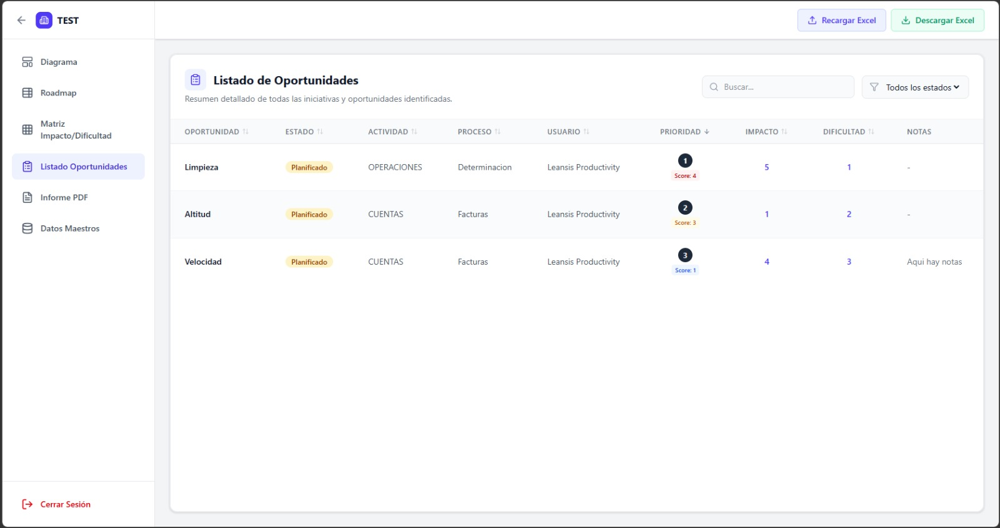
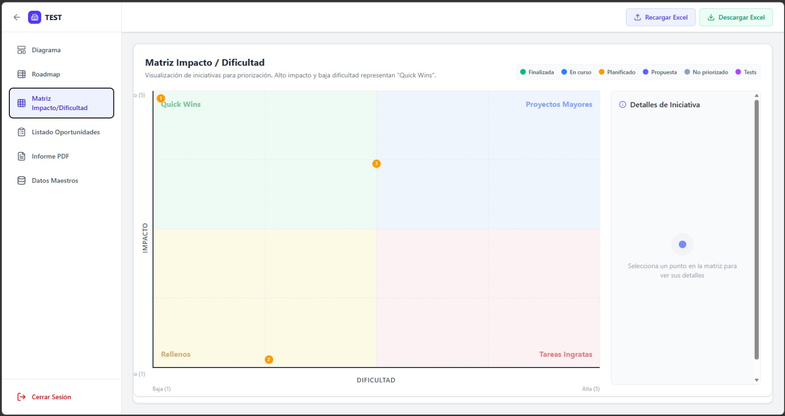
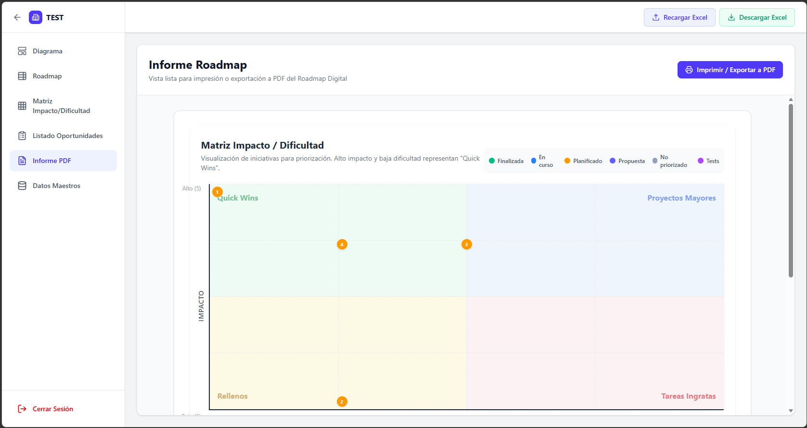

BPMN generator
De descripciones en lenguaje natural a diagramas BPMN listos para editar. Proceso guiado desde la generación del prompt hasta la creación esquema, integrando IA y un editor BPMN completo en un único flujo de trabajo.
Explorar la Interfaz
Funcionalidades Clave

Describe procesos en lenguaje natural
Describe un proceso en lenguaje natural y la aplicación genera automáticamente un prompt optimizado para IA.
- Conversión de explicaciones funcionales en prompts listos para IA
- Soporte para procesos complejos con múltiples pasos y decisiones
- Generación guiada para reducir errores de interpretación

Escoge la IA y reutiliza prompts fácilmente
La herramienta permite seleccionar el modelo de IA con el que trabajar y simplifica el intercambio de información entre plataformas. Copia el prompt generado, pégalo directamente en la IA elegida y reutiliza la respuesta en la aplicación para continuar el flujo de generación BPMN.
- Compatibilidad con diferentes herramientas y modelos de IA
- Copiado y pegado rápido de prompts y respuestas
- Flujo pensado para iterar y refinar procesos fácilmente

Generación automática del esquema BPMN
A partir de la respuesta generada por la IA, la aplicación construye automáticamente el diagrama BPMN dentro del editor visual. Los eventos, tareas, compuertas y conexiones se crean de forma estructurada para acelerar el modelado del proceso.
- Creación automática de diagramas BPMN desde texto generado por IA
- Interpretación estructurada de tareas, decisiones y flujos
- Visualización inmediata del proceso completo dentro del editor

Conversión inteligente mediante un DSL estructurado
La aplicación no genera directamente el BPMN desde texto libre, sino que utiliza un lenguaje intermedio DSL diseñado específicamente para traducir instrucciones de IA en modelos BPMN válidos. Esto permite validar la lógica del proceso antes de construir el diagrama final.
- Uso de un DSL intermedio orientado a procesos BPMN
- Validación temprana de errores estructurales y semánticos
- Transformación controlada desde texto IA a BPMN 2.0
Edición visual avanzada y renderizado optimizado
El editor integrado permite modificar y perfeccionar cualquier proceso generado automáticamente. Además del modelado BPMN, la aplicación organiza automáticamente el layout del diagrama para mantener una estructura limpia, jerárquica y fácil de interpretar incluso en procesos complejos.
- Edición directa de tareas, eventos, gateways y conexiones
- Interfaz visual intuitiva con herramientas BPMN integradas
- Capacidad de ajustar manualmente cualquier proceso generado
- Distribución automática de elementos y conexiones para mejorar la legibilidad